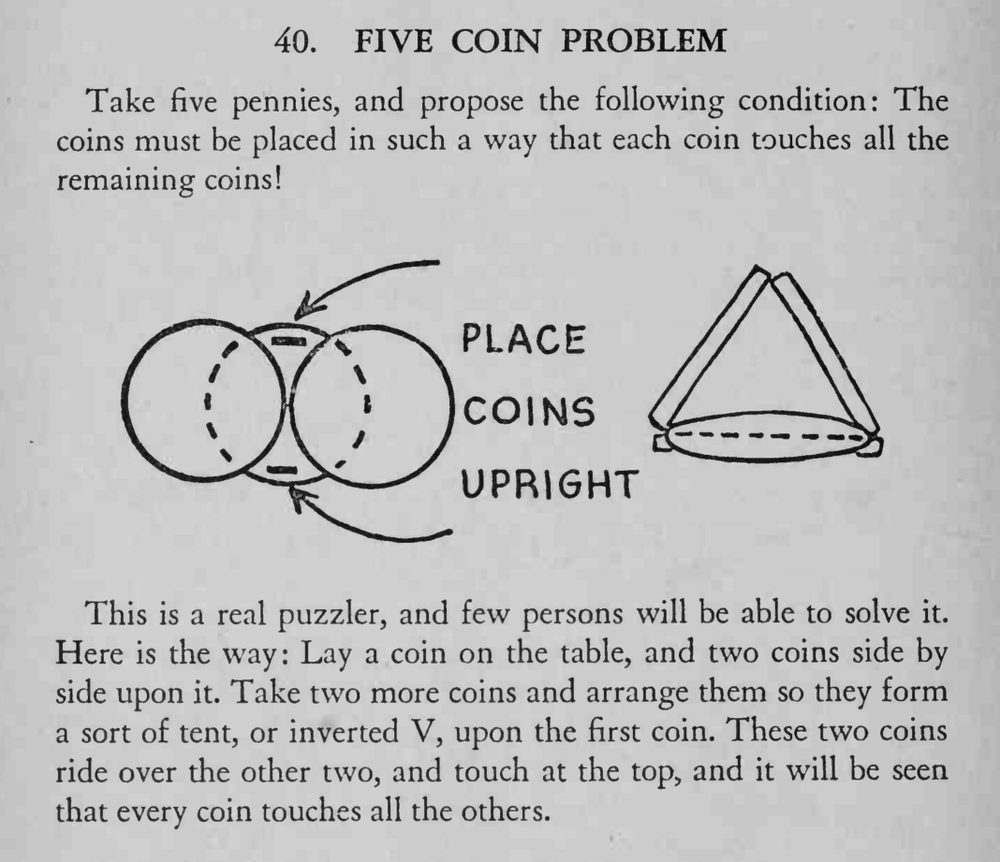

要求把五枚硬币摆成每一枚都碰到其余四枚，观众几乎解不出来。
关键是最后两枚要斜搭成倒 V 并压住前两枚；摆好后逐一点数，确认每枚都与其他四枚相接。

Take five pennies, and propose the following condition: The coins must be placed in such a way that each coin touches all the remaining coins This is a real puzzler, and few persons will be able to solve it. Here is the way: Lay a coin on the table, and two coins side by side upon it. Take two more coins and arrange them so they form a sort of tent, or inverted V, upon the first coin. These two coins ride over the other two, and touch at the top, and it will be seen that every coin touches all the others.